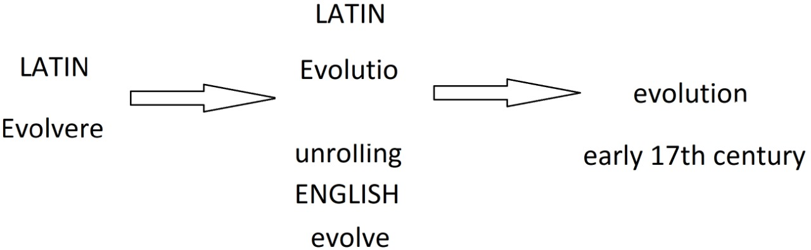
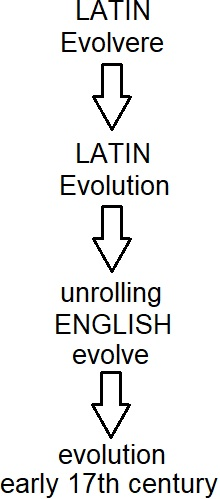

Evolução do pensamento e do conceito evolutivo
É muito comum no dia a dia corriqueiro, usar-se da palavra evolução para se tratar de uma mudança para melhor, um progresso. Porém, o conceito da palavra evolução que usamos atualmente, origina-se do latim “evolutio” (o desenrolar de um pergaminho), que por sua vez deriva do verbo “evolvere” que significa desenrolar.
Etimologicamente, então, evolução se demonstra como um processo de mudanças e variações genéticas, em que estas se “desenrolam” ao longo de análises e observações em gerações de espécies e populações, mostrando-se indiferentes quanto a uma finalidade positiva ou negativa. Mas nem sempre esse conceito foi definido como tal, sendo necessário alguns milhares de anos e pensadores para um consenso científico acerca do tema se formar.
Antes do Evolucionismo se tornar a principal teoria para os cientistas, acreditava-se no Fixismo, a ideia de que temos um criador divino e que as espécies da Terra são perfeitas e imutáveis. Destaca-se que essa teoria era fortificada pela aceitação da Geração Espontânea ou Abiogênese que na época justificava a origem da vida.
 Linha do tempo do conceito de evolução
O Evolucionismo já estava presente há muitos anos na discussão sobre como a vida se mantém com o tempo. Anaximandro e Aristóteles foram grandes colaboradores para essa hipótese, ainda na Grécia Antiga desde o século VI a.C. com observações fascinantes sobre o meio que estudavam. Anaximandro já acreditava que a vida provavelmente se originou na água e Aristóteles possui diversos estudos sobre a anatomia animal e a essência da vida, elaborando a ‘Scale Naturae’ que classificava os seres vivos por sua complexidade e o criador divino no topo da grade evolutiva.
Como se sabe, durante o período da Idade Média, o conhecimento da Grécia Antiga se perdeu em grande extensão da Europa. Porém, o Império Árabe resgatou essa cultura em documentos, traduziram e colaboraram muito na expansão do conhecimento. Um grande exemplo foi o escritor do século IX, Al-Jahiz, que elaborou o conceito da ‘luta pela vida’. Al-Jahiz teve uma grande influência em relacionar o Evolucionismo às chances de sobrevivência, à reprodução e aos efeitos do meio ambiente.
A cultura ocidental voltou a ser palco dos debates evolucionistas com a ascensão da cultura do iluminismo durante o período da renascença. O conde de Buffon, no século XVIII, propôs que cada espécie possuísse um ‘molde interno’ que se alterava pela interferência do meio. De acordo com o naturalista, espécies de algum gato ancestral explorou diversos ambientes pelo mundo e se transformaram em diferentes espécies como o leão, o tigre, a puma e o gato doméstico. Outro naturalista, Lamarck, propôs que a evolução das espécie se deve à ‘Lei do uso e desuso’, ou seja, as características essenciais de cada espécie para lidar com o meio iriam se especializar ao longo das gerações e aquelas características que não seriam úteis iriam atrofiar e ao longo das gerações deixariam de existir.
Mas, a grande revolução do pensamento evolutivo veio dos britânicos Charles Darwin e Alfred Wallace. Esses dois naturalistas propuseram a Ancestralidade em Comum, o que não foi aceito na época. De acordo com essa teoria, todos os seres vivos compartilham um mesmo ancestral, ou seja, a evolução partiu de uma única espécie na origem da vida e as demais gerações ramificaram por diversas linhas de outras espécies. A diferença entre espécies foi justificada pela possibilidade de mutação em populações de seus ancestrais e que essas populações passaram por um afunilamento, a Seleção Natural, ou seja, com diferenças entre as populações de cada espécie, aquelas que eram mais aptas a deixar descendentes eram selecionadas na visão evolutiva. O Evolucionismo seria um mecanismo gradual e dependente da sorte das mutações em populações para definir novas características que passariam a ser permanentes ou não ao longo das gerações. Com base em que anteriormente se acreditava na perfeição e na imutabilidade da natureza, tal teoria foi considerada um absurdo. Porém, muitos conhecimentos e evidências atuais fortalecem a Teoria Evolutiva Darwiniana.
Referências Bibliográficas
https://
Bowler, Peter J. “The Changing Meaning of ‘Evolution.’” Journal of the History of Ideas, vol. 36, no. 1, University of Pennsylvania Press, 1975, pp. 95–114, https://
https://
Evolução: o sentido da biologia (MEYER & EL-HANI, 2005).
https: